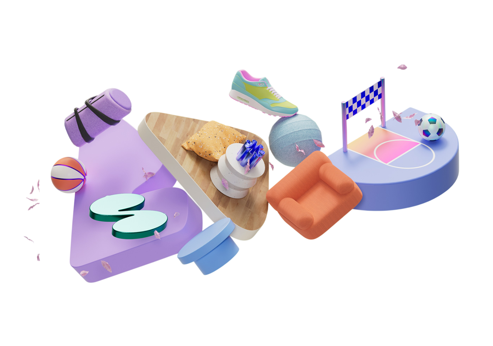
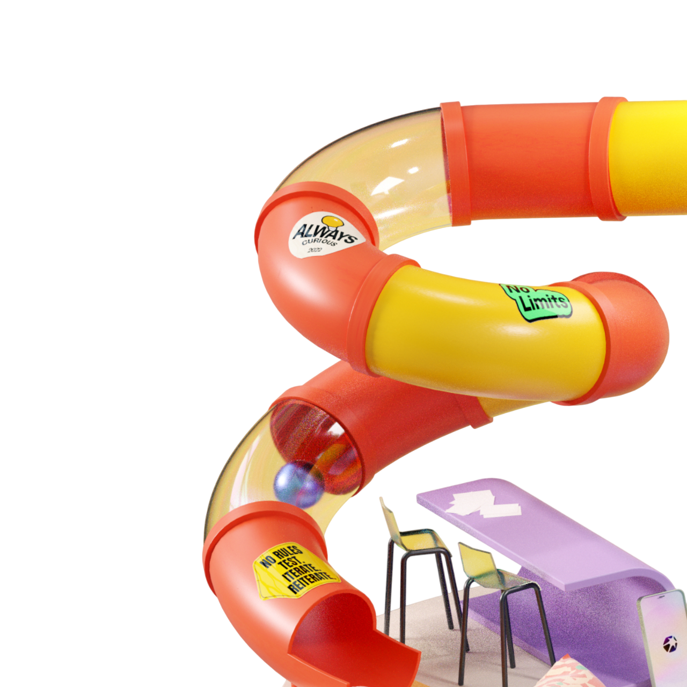
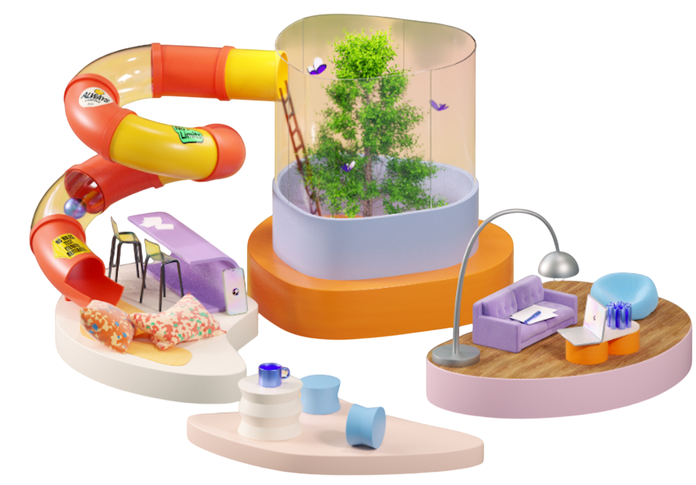
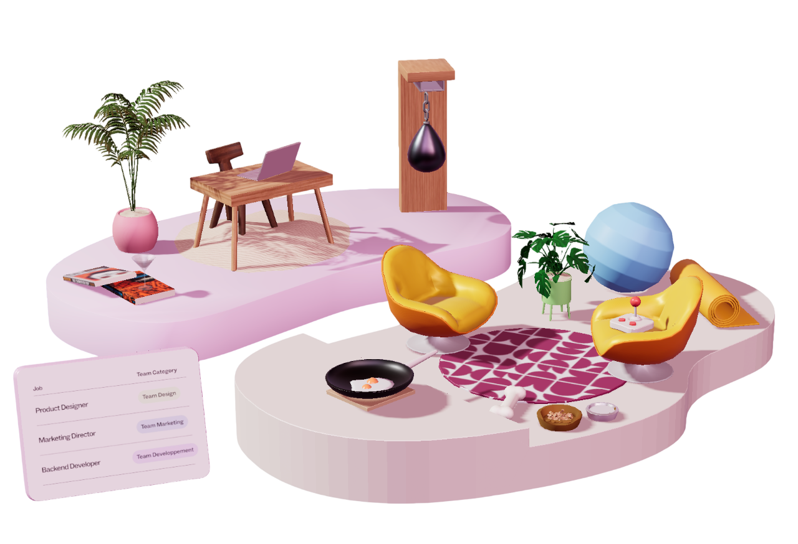

The first thing that caught my attention when interacting with the website was the colorful 3D environment on the homepage. The large text “Welcome to the Luni verse” appears behind several small scenes that look like different rooms or spaces representing parts of everyday life. The subtle movements and animations within each area made the environment feel lively and interesting. I was especially drawn to the soft pastel color palette, which creates a calm and pleasant visual atmosphere. The overall design feels imaginative and slightly dreamy, which makes the website look very playful and visually appealing.
During the first two minutes interacting with the experience, I performed the following actions: Opened the website and observed the 3D environment on the homepage. Moved the cursor around to observe the subtle movements of the scene. Looked closely at different objects placed in each area of the homepage. Hovered over elements and noticed objects moving or floating. Scrolled down to explore more parts of the website. Clicked on the Omada section to explore another environment. Observed the sports-themed environment, including the racing track and animated car. Interacted with objects such as the soccer ball and basketball. Navigated back to the homepage and clicked on the Studio section. Observed a new environment with dynamic 3D elements such as moving spheres and butterflies. Interacted with different 3D objects, including clicking on a butterfly and observing changes. Explored interactive elements such as turning objects on and off. Scrolled further and noticed the website automatically transitioned to a new section. Scrolled to the final Career section and observed a playful 3D environment with cute objects. Interacted with elements such as a frying pan and a punching bag, which responded in an engaging way.
I spent the most time engaging with the interactive animations throughout the website. As the experience is designed in a 3D environment, many objects respond to user interaction, which makes the experience more engaging. I spent a significant amount of time interacting with these 3D elements, observing how they move and react when I hovered over or clicked on them. This aspect of the website encouraged me to explore more and repeat certain interactions multiple times. This suggests that the interactive animations are a key feature designed to capture and maintain user attention.

The most common action during my two-minute interaction was moving the cursor across different parts of the 3D environment to observe how the objects respond. Many elements react to cursor movement by shifting or floating slightly, which encouraged me to continue exploring the scene. Another frequent action was scrolling, as I used it to navigate through the website and reveal new sections, where additional 3D elements would appear and animate as I moved down the page.
The most common action during my two-minute interaction was moving the cursor across different parts of the 3D environment to observe how the objects respond. Many elements react to cursor movement by shifting or floating slightly, which encouraged me to continue exploring the scene. Another frequent action was scrolling, as I used it to navigate through the website and reveal new sections, where additional 3D elements would appear and animate as I moved down the page.
The interactive experience communicates this goal through the use of visually engaging 3D environments, smooth animations, and visual storytelling. Each section introduces different aspects of the platform, allowing users to explore its features by interacting with 3D objects rather than passively reading text. After engaging with the 3D environments, users are presented with sections of text accompanied by fluid animations, where the typography and visuals appear almost dynamic and lively. This combination of movement, layout, and imagery helps guide users through the platform’s concept and enhances their overall understanding of its purpose.

In my opinion, the experience is designed to be used for a short period of time, typically around five to ten minutes. From my experience, the visually appealing interface, including the moving 3D elements and harmonious pastel colors, encourages users to explore the website in one session. However, it seems that the experience does not require frequent revisits, as it mainly functions as an introduction to the platform. I feel that one or two visits are enough for users to fully explore its content.
The interactive experience communicates this through its scroll-based structure and linear progression. As users scroll down the page, new sections are revealed sequentially, guiding them to explore the experience in a single session. Users are encouraged to click and interact with different elements in each section, engage with small 3D objects, and then read the related information about the platform. Additionally, the lack of features such as user accounts or regularly updated content suggests that the experience is designed to be explored once rather than repeatedly.
In my opinion, the experience references a variety of media forms, including video games, web-based animations, and digital product advertisements. The 3D environments and interactive elements create a game-like experience, allowing users to interact with objects as if they are playing within a virtual space. At the same time, the smooth animations of both visuals and text resemble common web animation styles found in modern websites. In addition, the overall structure and polished visual presentation of the website reflect a modern product landing page designed to promote a digital application.

These references suggest that I should interact with the experience in an active and exploratory way. The game-like elements encourage me to click, move the cursor, and interact with different 3D objects. Meanwhile, the web animation style leads me to scroll and observe how the content and concept change as I scroll up and down the page. At the same time, the structure of product advertisements also encourages me to read, explore, and understand the information about the interactive web project.
These references suggest that I should feel curious, excited, and engaged while interacting with the experience. The game-like elements make me feel excited and curious, as exploring one section encourages me to move to another to discover more interesting features. The web animation style makes me feel satisfied and impressed, as the smooth movements and soft visuals create a light and almost dreamlike atmosphere, as if I am floating in the clouds. In addition, the structure of a modern product landing page makes me feel interested and confident in the platform, as it presents information in a clear, polished, and visually appealing way.
One of the most annoying aspects of interaction is scroll sensitivity. The site responds very quickly to scrolling input, which sometimes causes the page to move to the next section too suddenly. As a result, I sometimes missed important details or didn't have enough time to fully explore the previous section before moving on to another experience. This made the interaction feel a bit rushed and reduced my ability to fully engage with certain elements.
The most satisfying part of the experience is the visual design of the site, especially the use of 3D elements and smooth animations. Carefully designed 3D objects, combined with soothing pastel colors, create a vibrant and visually pleasing environment. Smooth movements and responsive interactions make designs vibrant and engaging, enhancing the overall user experience. This strong visual design makes the website fun to explore and leaves a lasting impression.